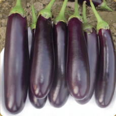

| Morphological Characters | |
|---|---|
| Growth Habit: | Spreading |
| Days to 1st picking : | 50 - 60 |
| Fruit Colour : | Glossy purple |
| Calyx Colour : | Green |
| Fruit Shape : | Long club shaped |
| Avg. Fruit Weight: | 70 - 80 gms. |
| Special Features: | Attractive bright purple fruits Tolerance to sucking pests Suitable for rainy season |